Заколдованное место
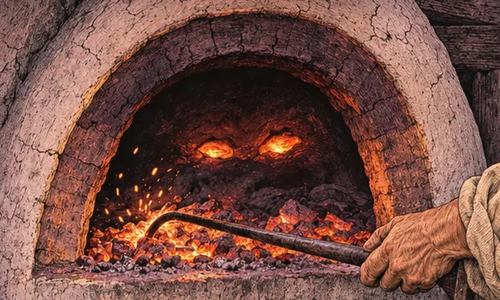
Фома Говорите, нечистую силу можно перехитрить? Захочет она вас обмануть — обманет.

Тот, что бежит посередине, — это я, Фома. Отец уехал в Крым продавать табак, а дед Максим взял нас с братьями сторожить баштан. Там росли дыни и арбузы. Мы гоняли птиц, а сами объедались до икоты.

Под вечер по дороге потянулись возы с волами. Это чумаки, торговцы. Дед присмотрелся — да он их всех знает!
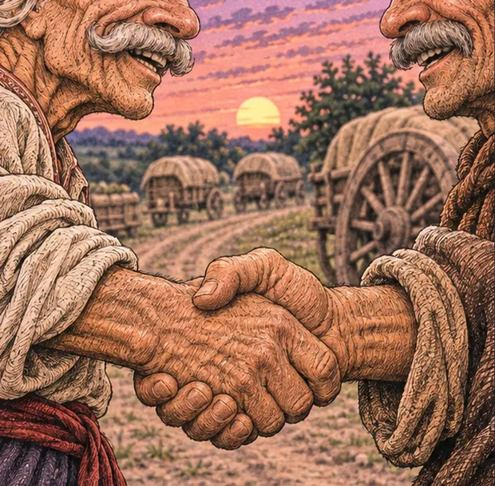
Чумак Здорово, Максим!

Дед велел нам сплясать перед гостями. Остап заиграл на сопилке, деревянной дудочке. Гляжу, у деда ноги сами дёргаются.

Дед Вот как танцуют!

Гляжу, не вытерпел старик. И как пошёл плясать! Только пятки засверкали.

У огуречной грядки дед хотел вскинуть ногу. Дёрнул — а сапог не отрывается от земли.


Ну как тут опозориться перед гостями? Дед отошёл к краю площадки и взял разбег.

С разбега — и снова встал как вкопанный. У того же камешка.
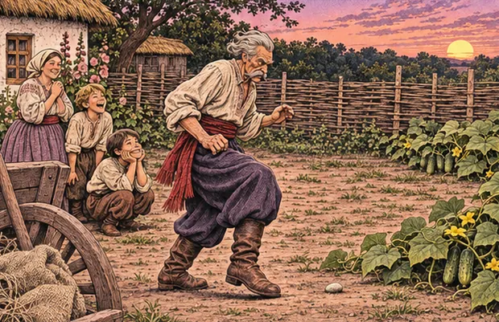
В третий раз пошёл мелкими шажками. Мы уже думали, что теперь-то у него выйдет…
Дед Ах ты, чёрт! Чтоб ты гнилой дыней подавился!
Ха… ха-ха!

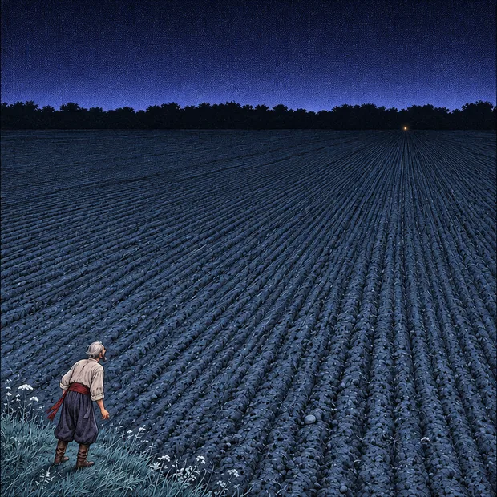
Дальше — со слов деда. Обернулся он — и смех как отрезало. Ни баштана, ни чумаков. Кругом поле. И ни души.

Место вроде знакомое. Слева голубятня священника. Справа гумно — сарай, где из колосьев выбивают зерно. Как дед сюда попал?

Вышел на тропинку и увидел свечку на могилке. Кто её посреди ночи зажёг?
Тут бы, кажется, домой повернуть. А деду, знаете, совсем другое в голову пришло.
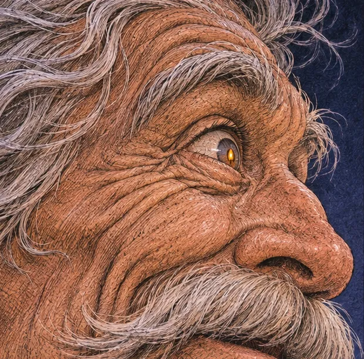
Дед решил, что вторая свечка отмечает место, где зарыто золото.
Дед Клад!

Копать-то нечем. Дед пометил могилу раздвоенной веткой, чтобы потом её найти.
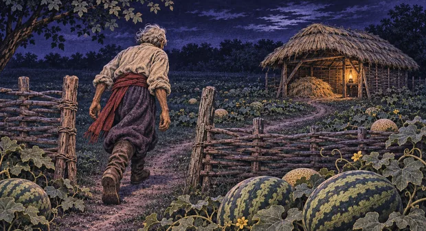
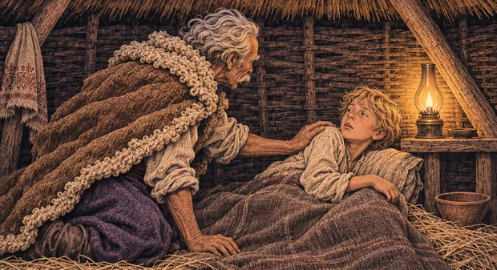
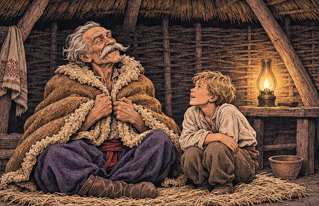
«Куда ты пропал?» — спросил Остап шёпотом.
Дед Не спрашивай, Остап. А то поседеешь!
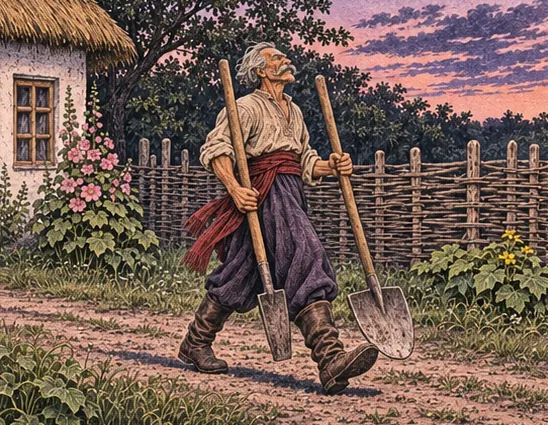
На следующий вечер дед взял две разные лопаты, узкую и широкую, и пошёл к огороду священника. Дорогу-то он помнил.

Голубятня на месте, а гумна нет! Свернул к гумну…

Гумно нашлось, голубятня пропала. И так, куда ни поверни. Вместе их никак не увидеть.
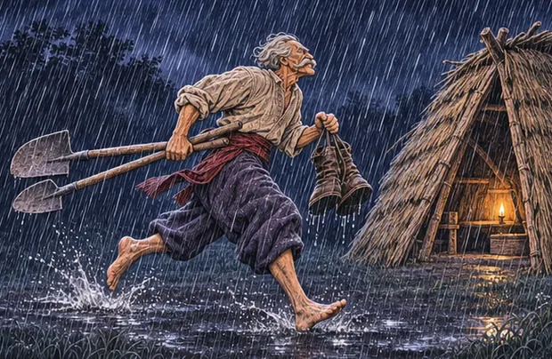
Хлынул ливень, и дед бросил поиски. Снял сапоги, чтоб не испортить, и босиком добежал до нашего шалаша. Сам вымок до нитки, зато сапоги сухие.
Наутро. У того же шалаша.
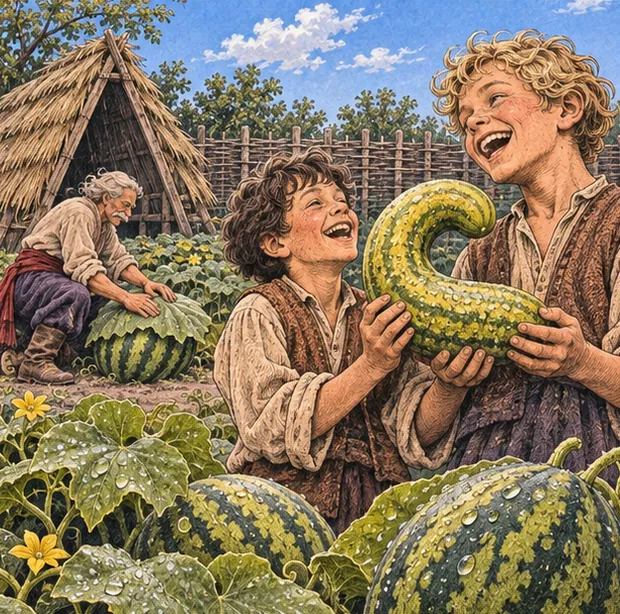
Дед как ни в чём не бывало накрывал арбузы листьями. А нам дал турецкую дыню из семян, которые привезли издалека. Свернулась, как змея.

К вечеру дед взялся за новую грядку под тыквы. Увидел тот самый камешек, где у него ноги застряли. «Проклятое место!» — буркнул дед и ударил лопатой в землю.

Ударил — и вместо грядки опять ночное поле. Теперь видны и голубятня, и гумно.


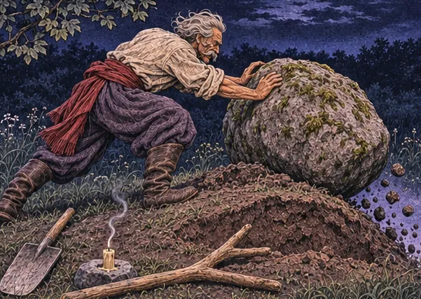
Дед Туда тебе и дорога!

Дед достал нюхательный табак. Только поднёс щепотку к носу, как кто-то чихнул у него прямо над головой.
Дед Отвернулся бы, раз чихаешь!
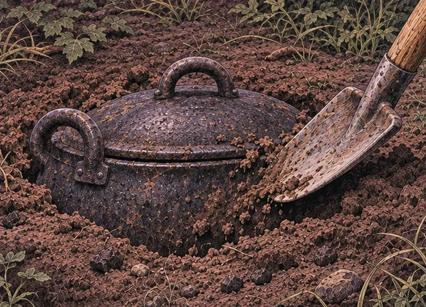
Лопата звякнула о крышку котла. Дед отгрёб землю. В нём-то и золото, решил он.
Дед Ага, вот ты где!

Тут птичий клюв пискнул то же самое. Следом проблеяла баранья голова, а из-за дерева те же слова проревел медведь.
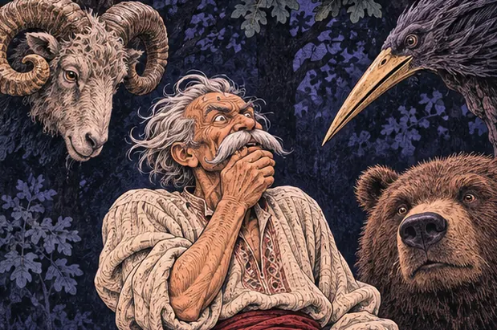
Дед только «гм». Клюв пискнул «гм», баран проблеял «гм», а медведь как рявкнет!
Гум!

Дед Чёрт с тобой! Забирай свой клад!

Уже бежать хотел. Оглянулся — вокруг опять ровная земля. «Только пугает», — решил дед. Упёрся, потянул и вытащил котёл.

Выкопав котёл, дед решил всё-таки понюхать табак. Тут пень раздул ноздри. «Сейчас и этот чихнёт!» Дед убрал табак.
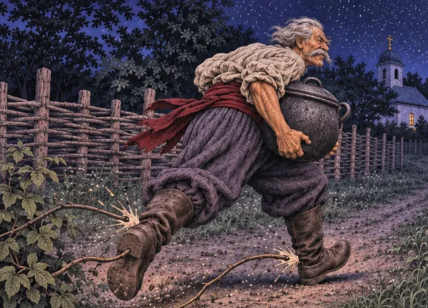
Котёл в охапку — и бежать. Будто кто прутьями по обеим ногам хлещет! Только у знакомого плетня дед отдышался.
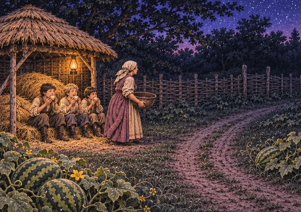
Мы с братьями уже часа три ждали деда. Мать принесла галушки — варёные кусочки теста. Поели без него. Мать вымыла горшок и искала, куда выплеснуть грязную воду.

Мать в полутьме увидела, будто по дорожке сама собой движется бочка. Решила, что кто-то из нас толкает её сзади. «Вот куда вылью!»
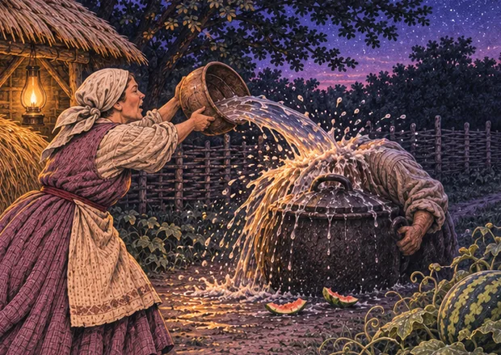
Мать плеснула помои прямо на «бочку». А та вдруг крикнула человеческим голосом.
Ай!

Тут мы и разглядели деда. С усов капает, на голове арбузная корка, а котёл он так и держит.
Дед Ну, ребята, теперь вам денег на бублики хватит!
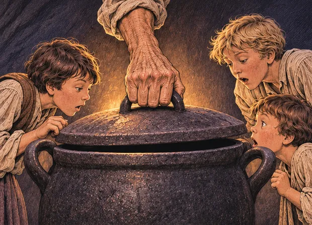
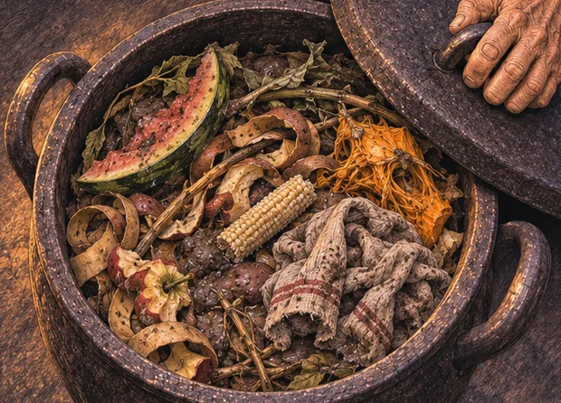
Ну что, золото? Мусор да гниль. Дед плюнул, бросил котёл и руки вымыл.
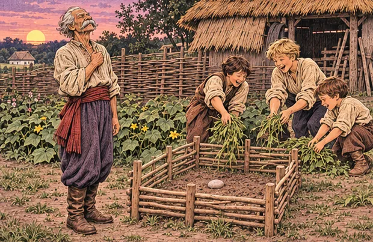
С тех пор дед твердил, что нечистой силе верить нельзя. То место велел отгородить, чтобы сбрасывать туда сорняки и мусор.
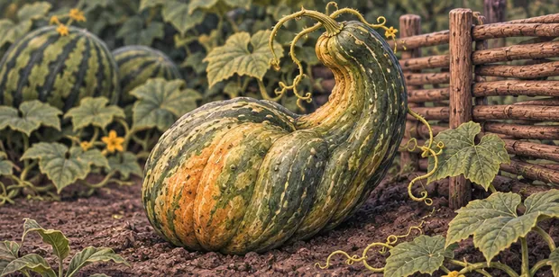
Потом отец сдал баштан соседним казакам. Они засеяли и тот клочок. Везде урожай отличный, а там — арбуз не арбуз, тыква не тыква. Чёрт знает, что такое!